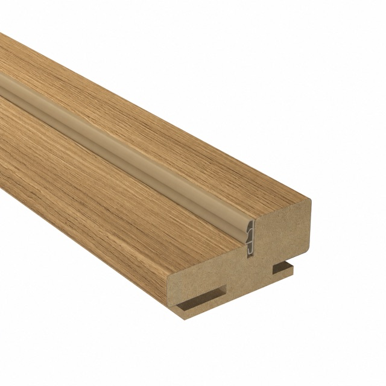
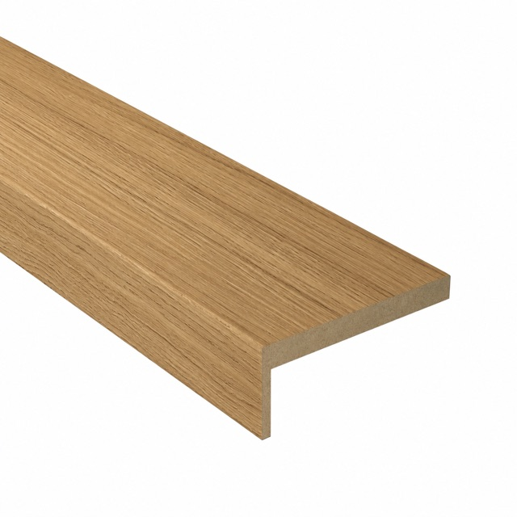
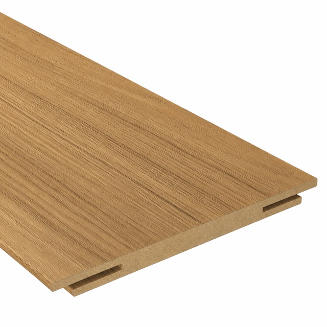

Погонаж для межкомнатных дверей
Погонаж — это обрамление дверного проёма: коробка, на которую навешивается полотно, наличники, закрывающие стык коробки со стеной, и доборы под толщину стены. Элементы выпускаются в отделках дверных полотен из каталога, поэтому обрамление можно взять точно в цвет двери — проём будет смотреться единым целым.
Чем телескопический погонаж отличается от простого. Телескопическая система собирается по принципу «в паз»: наличник и добор заводятся в пазы коробки, поэтому крепёж не виден, а стык получается аккуратным. Простой погонаж — базовое исполнение без паза, самый доступный вариант: элементы подрезаются и крепятся по месту при установке.
Зачем нужны доборы. Если стена толще стандартной коробки, добор наращивает её на нужную глубину — проём выглядит законченным при любой толщине стены. Ширина элементов — 100, 120, 150 или 200 мм.
Отделки. Палитра повторяет отделки полотен: Белый, Бетон, Дуб дымчатый, Капучино, Перламутр, Шампань, Ясень арктический и другие. Для дверей в эмали есть окрашенный телескопический погонаж (Белый, Серый, Шампань), для модели Прайм — телескопический с покрытием ПЭТ, для двери Уно — телескопический в цвете Дуб Мадейра (цена по запросу). Какой погонаж подходит конкретной модели, подсказываем на странице каждой двери.



Коробка
Основа проёма: на коробку навешивается полотно. В простом исполнении — с уплотнителем, у телескопической коробки есть пазы под наличник и добор.
от 475 ₽ за элемент
На фото — телескопическое исполнение в отделках Белый, Бетон, Капучино и Дуб Мадейра.
Цены и отделки
| Исполнение | Размер, мм | Отделки | Наличие | Цена за шт. | Добавить в корзину |
|---|---|---|---|---|---|
| Простой, с уплотнителем | 70×26×2060 | Белый, Бетон, Капучино, Перламутр, Дуб паллада, Итальянский орех, Миланский орех | ✓ Белый, Бетон, Капучино, Перламутр, Дуб паллада, Итальянский орех | 475 ₽ | |
| Телескопический | 70×32×2060 | Белый, Бетон, Капучино, Перламутр, Белый шёлк | ✓ Капучино | 579 ₽ | |
| Телескопический | 70×32×2060 | Дуб дымчатый, Ясень арктический | ✓ в наличии | 579 ₽ | |
| Телескопический | — | Дуб Мадейра | под заказ | по запросу | Узнать цену |
| Телескопический ПЭТ (для Прайм) | 70×32×2060 | Белый (ПЭТ) | под заказ | 683 ₽ | |
| Телескопический ПЭТ (для Прайм) | 70×32×2060 | Серый (ПЭТ), Шампань (бежевый) (ПЭТ) | ✓ в наличии | 683 ₽ | |
| Телескопический эмаль (окраш.) | 70×32×2060 | Белый, Серый, Шампань | ✓ в наличии | 1 130 ₽ | |
| Телескопический эмаль (окраш.) | 70×32×2360 | Белый, Серый, Шампань | под заказ | 1 320 ₽ |



Наличник гладкий
Планка с ровным профилем, закрывает стык коробки и стены. Телескопический наличник заводится в паз коробки — без видимого крепежа.
от 216 ₽ за элемент
На фото — телескопическое исполнение в отделках Белый, Бетон, Капучино и Дуб Мадейра.
Цены и отделки
| Исполнение | Размер, мм | Отделки | Наличие | Цена за шт. | Добавить в корзину |
|---|---|---|---|---|---|
| Простой | 70×8×2140 | Белый, Бетон, Капучино, Перламутр | ✓ в наличии | 216 ₽ | |
| Телескопический | 70×8×2140 (22×3) | Белый, Бетон, Капучино, Перламутр, Белый шёлк | ✓ Белый, Бетон, Капучино, Перламутр | 259 ₽ | |
| Телескопический | 70×8×2140 (22×3) | Дуб дымчатый, Ясень арктический | ✓ в наличии | 259 ₽ | |
| Телескопический | — | Дуб Мадейра | под заказ | по запросу | Узнать цену |
| Телескопический ПЭТ (для Прайм) | 70×8×2140 (22×3) | Белый (ПЭТ) | под заказ | 363 ₽ | |
| Телескопический ПЭТ (для Прайм) | 70×8×2140 (22×3) | Серый (ПЭТ), Шампань (бежевый) (ПЭТ) | ✓ в наличии | 363 ₽ | |
| Телескопический эмаль (окраш.) | 70×8×2140 (22×3) | Белый, Серый, Шампань | ✓ в наличии | 725 ₽ | |
| Телескопический эмаль (окраш.) | 70×8×2450 (22×3) | Белый, Серый, Шампань | под заказ | 895 ₽ |
Наличник фигурный
Наличник с фигурным (профилированным) сечением. Выпускается в простом исполнении — к отделкам Белый, Дуб паллада, Итальянский и Миланский орех.
от 268 ₽ за элемент
Цены и отделки
| Исполнение | Размер, мм | Отделки | Наличие | Цена за шт. | Добавить в корзину |
|---|---|---|---|---|---|
| Простой | 70×10×2140 | Белый, Дуб паллада, Итальянский орех, Миланский орех | ✓ в наличии | 268 ₽ |



Добор
Наращивает коробку, когда стена толще стандартной: проём выглядит законченным при любой толщине стены. Ширина — 100, 120, 150 или 200 мм.
от 320 ₽ за элемент
На фото — телескопическое исполнение в отделках Белый, Бетон, Капучино и Дуб Мадейра.
Цены и отделки
Цены — для полотен высотой 2000 мм.
| Исполнение | Размер, мм | Отделки | Наличие | Цена за шт. | Добавить в корзину |
|---|---|---|---|---|---|
| Простой | 120×8×2060 | Белый, Бетон, Капучино, Перламутр, Дуб паллада, Итальянский орех, Миланский орех | ✓ в наличии | 320 ₽ | |
| Простой | 200×8×2060 | Белый, Бетон, Капучино, Перламутр, Дуб паллада, Итальянский орех, Миланский орех | ✓ в наличии | 519 ₽ | |
| Телескопический | 100×10×2060 | Белый, Бетон, Капучино, Перламутр, Белый шёлк | ✓ Белый, Капучино, Перламутр | 320 ₽ | |
| Телескопический | 100×10×2060 | Дуб дымчатый, Ясень арктический | ✓ в наличии | 320 ₽ | |
| Телескопический | 150×10×2060 | Белый, Бетон, Капучино, Перламутр, Белый шёлк | ✓ в наличии | 449 ₽ | |
| Телескопический | 150×10×2060 | Дуб дымчатый, Ясень арктический | ✓ в наличии | 449 ₽ | |
| Телескопический | 200×10×2060 | Белый, Бетон, Капучино, Перламутр, Белый шёлк | ✓ Бетон, Капучино, Перламутр, Белый шёлк | 570 ₽ | |
| Телескопический | 200×10×2060 | Дуб дымчатый, Ясень арктический | ✓ в наличии | 570 ₽ | |
| Телескопический | — | Дуб Мадейра | под заказ | по запросу | Узнать цену |
| Телескопический ПЭТ (для Прайм) | 100×10×2060 | Белый (ПЭТ) | ✓ в наличии | 432 ₽ | |
| Телескопический ПЭТ (для Прайм) | 100×10×2060 | Серый (ПЭТ), Шампань (бежевый) (ПЭТ) | ✓ в наличии | 432 ₽ | |
| Телескопический ПЭТ (для Прайм) | 150×10×2060 | Белый (ПЭТ) | ✓ в наличии | 605 ₽ | |
| Телескопический ПЭТ (для Прайм) | 150×10×2060 | Серый (ПЭТ), Шампань (бежевый) (ПЭТ) | ✓ в наличии | 605 ₽ | |
| Телескопический ПЭТ (для Прайм) | 200×10×2060 | Белый (ПЭТ) | ✓ в наличии | 916 ₽ | |
| Телескопический ПЭТ (для Прайм) | 200×10×2060 | Серый (ПЭТ), Шампань (бежевый) (ПЭТ) | ✓ в наличии | 916 ₽ | |
| Телескопический эмаль (окраш.) | 100×10×2060 | Белый, Серый, Шампань | ✓ в наличии | 810 ₽ | |
| Телескопический эмаль (окраш.) | 100×10×2360 | Белый, Серый, Шампань | под заказ | 915 ₽ | |
| Телескопический эмаль (окраш.) | 150×10×2060 | Белый, Серый, Шампань | ✓ в наличии | 980 ₽ | |
| Телескопический эмаль (окраш.) | 150×10×2360 | Белый, Серый, Шампань | под заказ | 1 105 ₽ | |
| Телескопический эмаль (окраш.) | 200×10×2060 | Белый, Серый, Шампань | ✓ в наличии | 1 150 ₽ | |
| Телескопический эмаль (окраш.) | 200×10×2360 | Белый, Серый, Шампань | под заказ | 1 300 ₽ |
Цена указана за один элемент. Сколько элементов нужно под ваш проём, посчитаем по заявке или при замере.
Рассчитать комплект погонажа
Оставьте телефон или напишите в Telegram: посчитаем коробки, наличники и доборы под ваши проёмы и перезвоним.
Заявка сформирована
Мы открыли Telegram с текстом вашей заявки — проверьте его и нажмите «Отправить» в чате. Если чат не открылся, напишите нам напрямую или позвоните.
Наш Telegram: @doors_fabrika
Или позвоните: +7 993 268-93-22